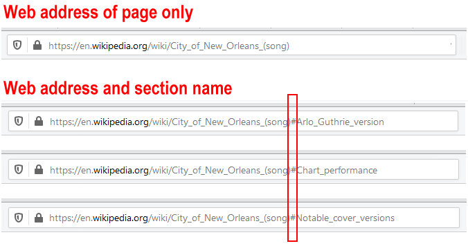
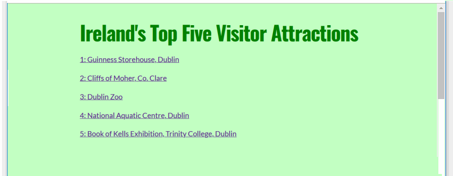
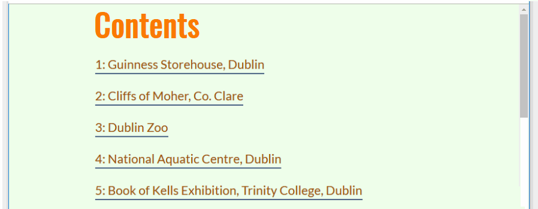

Learning Goals
At the end of this Tutorial you will be able to:
- Use internal hyperlinks with a smooth-scrolling effect to create a web page navigation system.
You can view a finished version of the sample web page to which you will add and style internal hyperlinks in this Tutorial by clicking the link below. The finished sample page will open in a new tab of your web browser.
About internal hyperlinks
Hyperlinks are not just for linking to web pages or other files. You can also create a hyperlink to link to a part of a web page.
So-called internal hyperlinks are commonly found on lengthy web pages with large amounts of content. They enable the web designer to offer a “Table of Contents” at the top of the page which users can click/tap to navigate to a particular section of that web page.
Pages on Wikipedia typically include internal hyperlinks. For example, click the link below to open a Wikipedia page in a new browser tab for the Steve Goodman song, City of New Orleans
City of New Orleans (song)
After some introductory text, you can see a number of internal hyperlinks that will bring you to different parts of the same web page.

If you click on any of these links, notice how the URL (web address) in your browser changes.

You can see that the web address is now composed of two parts:
- The address of the web page, and
- The name of a section of the web page
The two parts of the web address are separated by the hash # character. A linked-to section of a web page is known as a document fragment.
Internal hyperlinks and named anchors
Consider the basic example where you want to offer visitors a “Table of Contents” at the top of a web page.
You might begin by entering the following:
<h2>Contents</h2>
<p>Introduction</p>
<p>Section One</p>
<p>Section Two</p>
<p>Section Three</p>
<p>Summary</p>
In a web browser, this will display as shown below.

Next, you would add the internal hyperlinks. Note how the link destinations inside the href attributes always start with the # hash character.
<h2>Contents</h2>
<p><a href="#introduction">Introduction</a>/<p>
<p><a href="#one">Section One</a>/<p>
<p><a href="#two">Section Two</a>/<p>
<p><a href="#three">Section Three</a>/<p>
<p><a href="#summary">Summary</a>/<p>
Your “Table of Contents” now look like a list of hyperlinks.

But the hyperlinks have no destinations – they do not lead anywhere.
Your final step is to add destination IDs. These are the locations in the page to which the hyperlinks will take the user. See the example below.
<h3 id="three">Section Three</h3>
In the remainder of this Tutorial, you will add and style internal hyperlinks using a web page and stylesheet file you previously created.
Preparing your sample web page
In this section, you will work with the sample page-6.html web page and style-6.css stylesheet in your websites folder.
You created this web page and stylesheet in the Introduction to Images Tutorial and updated it in the Working with Google Fonts Tutorial.
- In Visual Studio Code, open the following two files:
page-6.html
style-6.css
- Your first task is to make the web page responsive by using media queries and fluid font sizes.
At the top of the page-6.css stylesheet, replace the current web browser resets by copying-and-pasting the following:
* { margin: 0; padding: 0; border: none }
html { height: 100% }
body { min-height: 100%; max-width: 1600px; margin-left: auto; margin-right: auto }
img { width: 100%; height: auto; display: block }
- Under the web browser resets, replace the current body styles with the following:
body { background-color: #FFFFBD }
@media (min-width: 768px) { body { padding: 1% 20% 4% 20% } }
@media (max-width: 767px) { body { padding: 4% 9% 11% 9% } }
Next, you will update the font sizes of the web page content.
- For the h1 main heading selector, update the font-size property from the fixed value of 72px by copying-and-pasting this fluid value:
font-size: calc(52px + (72 - 52) * ((100vw - 320px) / (1600 - 320)));
- For the h2 sub-heading selector, update the font-size property from the fixed value of 56px by copying-and-pasting this fluid value:
font-size: calc(34px + (56 - 34) * ((100vw - 320px) / (1600 - 320)));
- And for the text paragraphs styled with the p selector, update the font-size property from the fixed value of 22px by copying-and-pasting this fluid value:
font-size: calc(18px + (22 - 18) * ((100vw - 320px) / (1600 - 320)));
- Save the page-6.css stylesheet and view the page-6.html web page in your browser on both desktop/laptop and mobile-sized screens.

Click page-6.html (before internal hyperlinks added) to view a finished sample of this updated and responsive web page in a new tab of your web browser.
Adding internal hyperlinks and named anchors
Now you will add internal hyperlinks and destination IDs to your sample page-6.html web page.
Adding the internal hyperlinks
Let᾿s begin by creating a “Table of Contents” that will help users navigate through your sample web page.
- In VS Code, display the page-6.html web page.
- Directly uner the main <h1> heading of “Ireland’s Top Five Visitor Attractions”, copy-and-paste the following:
<h2>Contents</h2>
<p><a href="#guinness">1: Guinness Storehouse, Dublin</a></p>
<p><a href="#cliffs-of-moher">2: Cliffs of Moher, Co. Clare</a></p>
<p><a href="#dublin-zoo">3: Dublin Zoo</a></p>
<p><a href="#aquatic-centre">4: National Aquatic Centre, Dublin</a></p>
<p><a href="#kells-tcd">5: Book of Kells Exhibition, Trinity College, Dublin</a></p>
- Save the page-6.html web page and view it in your web browser.
You can see the five items under the “Contents” sub-headings look like hyperlinks – but they are not clickable. They do not lead anywhere.

This is because the five link destinations do not yet exist. Let’s add these now.
Adding the destination IDs
For the five internal hyperlinks, you will now add their link destinations.
- In your page-6.html web page, add five destination IDs, one for each of the <h2> sub-headings under the “Contents” list at the top of the page.
<h2 id="guinness">Guinness Storehouse, Dublin</h2>
<h2 id="cliffs-of-moher">Cliffs of Moher, Co. Clare</h2>
<h2 id="dublin-zoo">Dublin Zoo</h2>
<h2 id="aquatic-centre">National Aquatic Centre, Dublin</h2>
<h2 id="kells-tcd">Book of Kells Exhibition, Trinity College, Dublin</h2>
Note that you do not add the hash # character before the link destinations.
- Save the web page and view it in your web browser.
The five links in under the “Contents” sub-heading at the top of the web page should now work correctly.
You can see that, when clicked or tapped, the internal page links ‘jump’ quickly to their respective destinations further down the web page.
Follow these steps to change this to a so-called smooth-scrolling effect.
- In VS Code, display the style-6.css stylesheet.
- Add this new rule to the bottom of the web browser resets section at the beginning of the CSS file.
html { scroll-behavior: smooth }
You web browser resets section should now look as follows

- Save the stylesheet and verify that the scroll effect works correctly.
Note that this smooth-scrolling effect is not supported by the Apple Safari web browser.
It should work in the Google Chrome, Mozilla Firefox, Microsoft Edge and Opera web browsers.
Adding a ‘Back to top‘ hyperlink
Let’s add one further internal hyperlink: one that takes the user back up to the top of the web page.
Here are the steps.
- At the very top of the page-6.html web page, replace the current opening <body> tag with the following that includes a destination ID.
<body id="top-of-page">
This will be the destination for the ‘Back to top‘ internal hyperlink.
- Next, at the very end of the web page, just before the closing </body> tag, add the following internal hyperlink.
<p><a href="#top-of-page">Return to top of page</a></p>
The end of your web page should now look similar to that below.

- Save your web page and verify the ‘Back to top‘ link works correctly.
Styling the web page hyperlinks
Now you will add some style rules to the hyperlinks on your web page. Follow these steps
- In VS Code, display the style-6.css stylesheet.
- At the bottom of the file, add the following comment line, selector and style rules for inactive hyperlinks.
a:link, a:visited {
text-decoration: none;
color: #9D4F00;
padding-bottom: 2px;
border-bottom: solid 2px #455C80;
}
This removes the default hyperlink underline, colours the text dark orange, and adds a dark blue bottom border that is two pixels tall and postioned two pixels under the hyperlink text.
- Under this, add the following for the hyperlinks in their various active states.
a:hover, a:focus, a:active {
text-decoration: none;
color: green;
padding-bottom: 2px;
border-bottom: solid 2px green;
}
This changes the text and bottom border colour to dark green when the hyperlinks are in any one of their three active states.
- Save your web page.
Your hyperlinks should now look as shown below, both in the “Contents” section and further down within the text of the web page.

At the top of the web page, you need to add some space under the list of internal hyperlinks and above the bold introduction text that follows.
- In VS Code, display the page-6.html web page.
- At the beginning of the introduction text, replace the opening <p> tag with a paragraph tag that includes a new class named introduction.

- Switch to the style-6.css stylesheet.
- At about line 51, add the following two style rules, each within a media query.
@media (min-width: 768px) { p.introduction { margin-top: 8% } }
@media (max-width: 767px) { p.introduction { margin-top: 20% } }
- Save your web page and stylesheet.
You are now finished working with this sample web page and stylesheet.
Click page-6.html to view a finished sample of this web page in a new tab of your web browser.
Uploading your files to GitHub
Upload the following web pages and stylesheet to your account on GitHub:
page-6.html
style-6.css
Your web pages will be published at web addresses similar to the following:
https://username.github.io/page-6.html
It may take a few minutes for your uploaded files to appear on GitHub.
Return to All Tutorials.